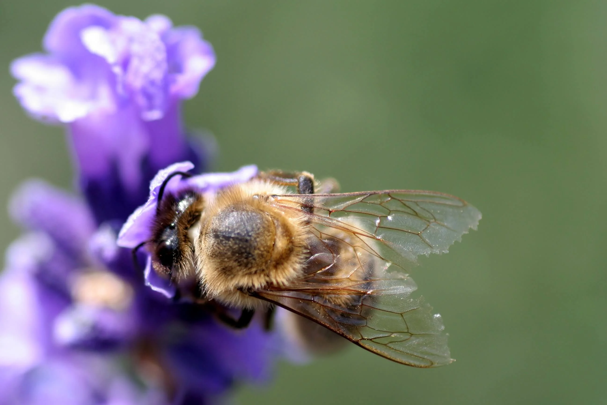

El beneficio es mutuo, nosotros nos beneficiamos con la miel ya que es sabido que es un alimento muy nutritivo e ideal para la salud; rico en múltiples vitaminas, antioxidantes y una gran fuente de carbohidratos. Además la miel es una buena ayuda frente a las alergias, el colesterol y mas.
Las abejas se benefician en su nutrición y ven mejorada su salud, ya que no se encuentran expuestas a los pesticidas. En las urbes, la variedad de flores que polinizan es mucho mayor que en el campo (debido a los monocultivos) y una dieta más variada implica un mayor surtido de nutrientes.
Abejas bebiendo agua en la casa de America en el Desierto de Chihuahua
Las abejas melíferas son esenciales para un medio ambiente saludable y una economía sustentable. Son ellas quienes polinizan la mayoría de nuestras frutas y verduras. Las abejas trasladan el polen entre las partes masculina y femenina de las flores, permitiendo que las plantas desarrollen frutos.